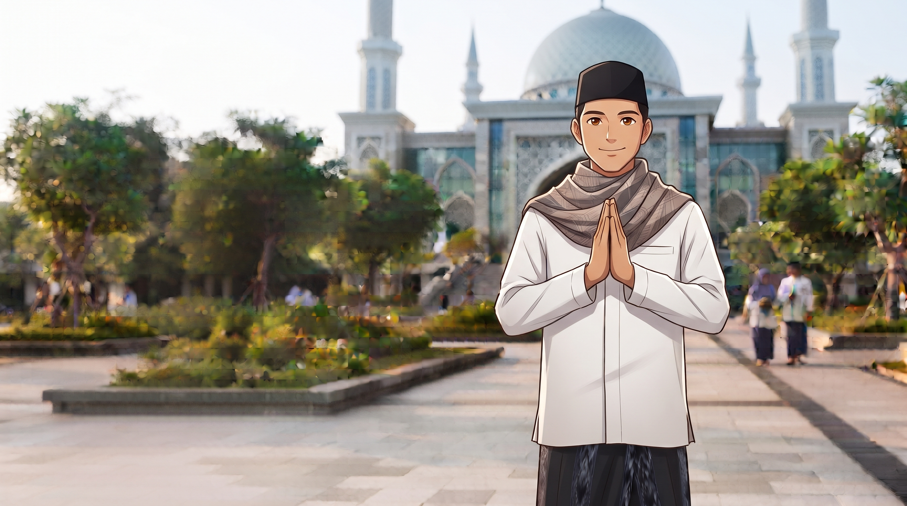

Mengenal Lebih Dekat
Perjalanan enam belas tahun Pesantren Modern Al-Izzah — dari surau kecil berdinding bambu hingga menjadi institusi pendidikan Islam bertaraf internasional.
Arah & Tujuan
"Menjadi pesantren modern bertaraf internasional yang melahirkan generasi hafidzul Qur'an, unggul dalam sains dan teknologi, serta berakhlak mulia — pemimpin peradaban yang rahmatan lil 'alamin."
Menyelenggarakan program Tahfidzul Qur'an 30 juz dengan metode talaqqi dan sanad yang bersambung.
Mengintegrasikan kurikulum Cambridge internasional dengan kurikulum pesantren salaf modern.
Menjadikan Bahasa Arab dan Inggris sebagai bahasa pengantar serta komunikasi harian santri.
Mengembangkan riset sains, robotika, dan teknologi digital sebagai wujud ibadah dan khidmat umat.
Membentuk karakter pemimpin muslim yang ikhlas, disiplin, mandiri, dan berjiwa sosial.
Memperluas kemitraan global dengan universitas dan lembaga pendidikan di lima benua.
Perjalanan Kami
Dari sebuah surau kecil di tepi sawah, hingga kampus internasional yang membanggakan umat.
KH. Abdullah Izzah, Lc., M.A. mendirikan pesantren dengan 27 santri dan 5 ustadz di sebuah bangunan wakaf sederhana. Cita-cita besar memadukan pesantren dan pendidikan global lahir di sini.
Kampus seluas 2 hektar rampung dibangun, lengkap dengan Masjid Agung berkapasitas 2.000 jamaah dan dua gedung asrama. Jumlah santri tumbuh menjadi 300.
Al-Izzah meraih akreditasi kurikulum Cambridge International dan untuk pertama kalinya mengirimkan santri ke olimpiade sains tingkat internasional.
Angkatan pertama lulus dengan capaian 100% hafalan 30 juz. Santri Al-Izzah meraih Juara 1 Musabaqah Hifdzil Qur'an internasional di Turki.
Laboratorium robotika & AI diresmikan. Kemitraan diperluas ke 50+ universitas global, termasuk Al-Azhar Kairo dan IIUM Malaysia.
1.200 santri aktif dari 15 provinsi, terakreditasi Unggul, dan diakui sebagai pesantren modern percontohan berstandar internasional.
Karakter Santri
Beribadah dan berilmu semata-mata karena Allah SWT, tanpa pamrih.
Kehidupan teratur dari qiyamul lail hingga mudzakarah malam.
Keluarga besar multikultural dari berbagai daerah dan negara.
Menuntaskan setiap amal dengan kualitas terbaik dan penuh tanggung jawab.
"Kami tidak sekadar mencetak anak-anak yang pintar. Kami merawat jiwa-jiwa yang membawa cahaya Al-Qur'an untuk menerangi dunia."
KH. Abdullah Izzah, Lc., M.A.
Pendiri & Pengasuh Pesantren
Tuliskan kisah putra-putri Anda dalam lembar berikutnya perjalanan Pesantren Modern Al-Izzah.